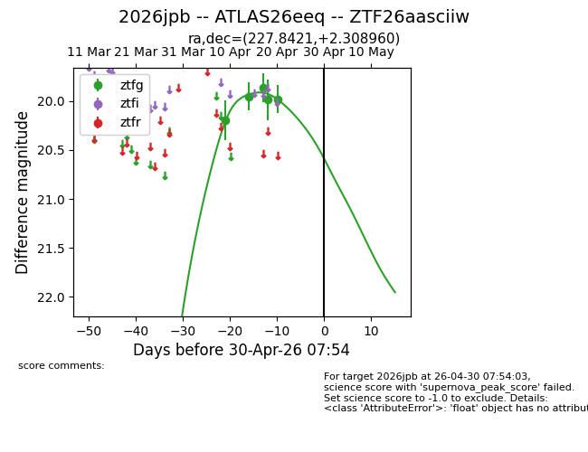
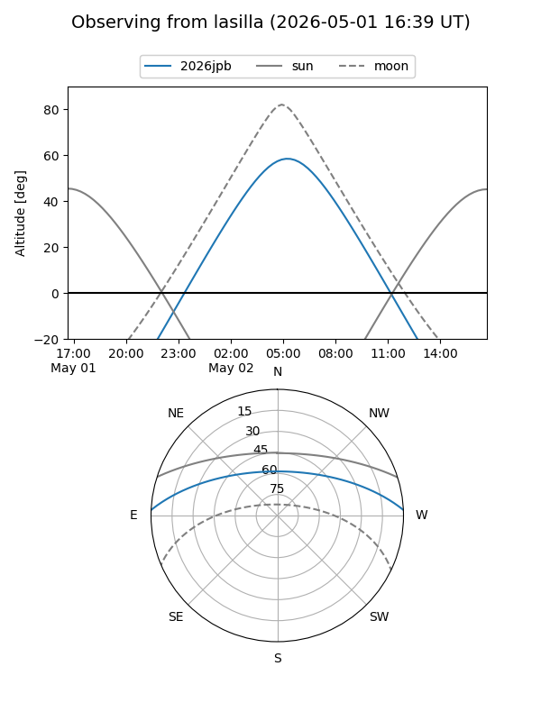
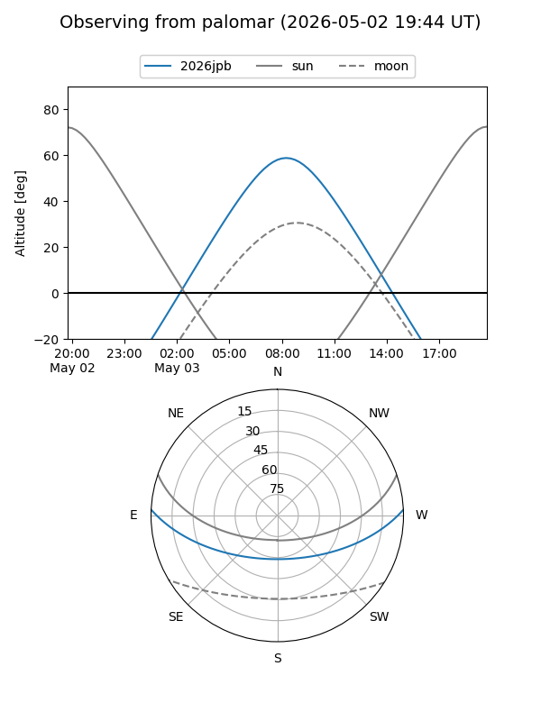
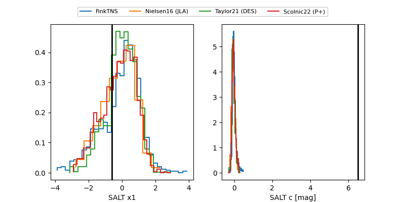

2026jpb
Target 2026jpb at 2026-04-30 07:58
Aliases and brokers:
FINK: link
Lasair: link
ALeRCE: link
TNS: link
YSE: link
alt names
ZTF26aasciiw (ztf,fink_ztf)
2026jpb (tns,yse)
ATLAS26eeq (atlas)
Coordinates:
equatorial (ra, dec) = 227.8421,+2.30896
equatorial (HMS+DMS) = 15:11:22.09,+02:18:32.25
galactic (l, b) = (2.4320,+48.32853)
Flags:
Photometry:
last ztfg=19.98
5 ztfg detections
Lightcurve

Visibility


Additional plots
